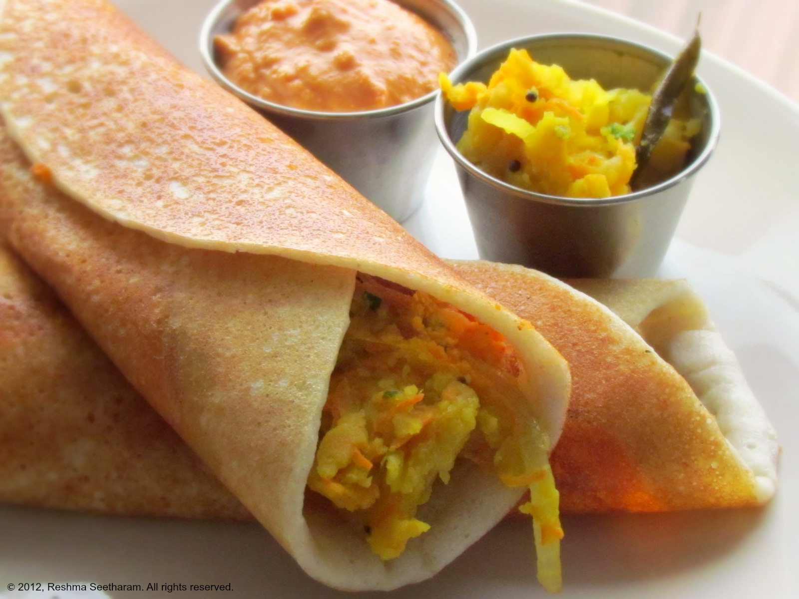

Ingredients
For the dosa
Dosa batter -
as needed
Oil - as needed
For the masala
Potatoes - 3
Onion - 1
Green chilies - 3 or 4
Curry Leaves - 1 strand
cilantro - handful
Mustard seeds - 1/4 tsp
Chana dal - 1/2 tsp
Turmeric powder - 1/4 spoon
Green Peas - 1/4 cup (optional)
Close the other side
Method
Making the potato masala
1. Boil the potatoes and mash them coarsly.
2. In a kadai heat little oil, temper the mustard seeds and chana Dal.
3. Add curry leaves, slitted green chillies and sliced onion. Saute it until the
onion is transparent.Add turmeric to it.Add 1/2 a cup of water and salt to
taste,let it boil.
4.Add the mashed potatoes and green peas to the mixture. Let it cook together
for 2 mintutes, Spinkle soome chopped cilatro on top.
Making the masala dosa
1. Pour a spoonful of batter on a hot dosa griddle. Immediately spread it using
the back of the spoon using concentric circular motion.
2. Add few drops of oil/ghee/butter on top.
3. Once the first side is cooked, you can flip the dosa or let it cook as it is.
4. Once the dosa is completely cooked add the masala in the center as shown.
5. Cover the masala with the dosa as shown in the picture.
6. Serve with hot sambhar and chutney varieties.
7. Serve it with coconut
chutney
Rice - 3.5 cups
Urad dal - 1 cup
Fenugreek seeds - 2 tblsp
Bengalgram dal - 2tblsp (optional)
Gingelly Oil - to fry dosas
Salt - to taste
Wash and soak the rice and urad dal with bengalgram dal and fenugreek seeds separately or together . Traditionally it used to soaked separately and ground separately. But with modern mixies and grinders you can grind everything together itself.
Similarly overnight soaking is good. But for urgent situations, even 1 hour of soaking will do for modern mixies and grinders.
After soaking, drain and grind it to a smooth paste with salt and water enough to make a batter little thinner than idli batter. If the batter becomes thicker you can always add water later.
Let this batter ferment overnight till it raises to double its size.
Heat a traditional indalium or cast iron dosa pan. You can also use non stick dosa pans.
The pan should become hot enough so that when you sprinkle few drops of water on the pan, it should sizzle right away.
Just add 3-4 drops of gingelly oil and spread it all over the pan using an onion slice or a clean kitchen towel.
Pour a ladle full of batter. Spread it using the back of the spoon using circular motion to about 9 inch round dosa.
Add few drops of oil around the edges of the dosa.
Once it turns slightly brown and the edges start lifting, flip and brown the other side too.